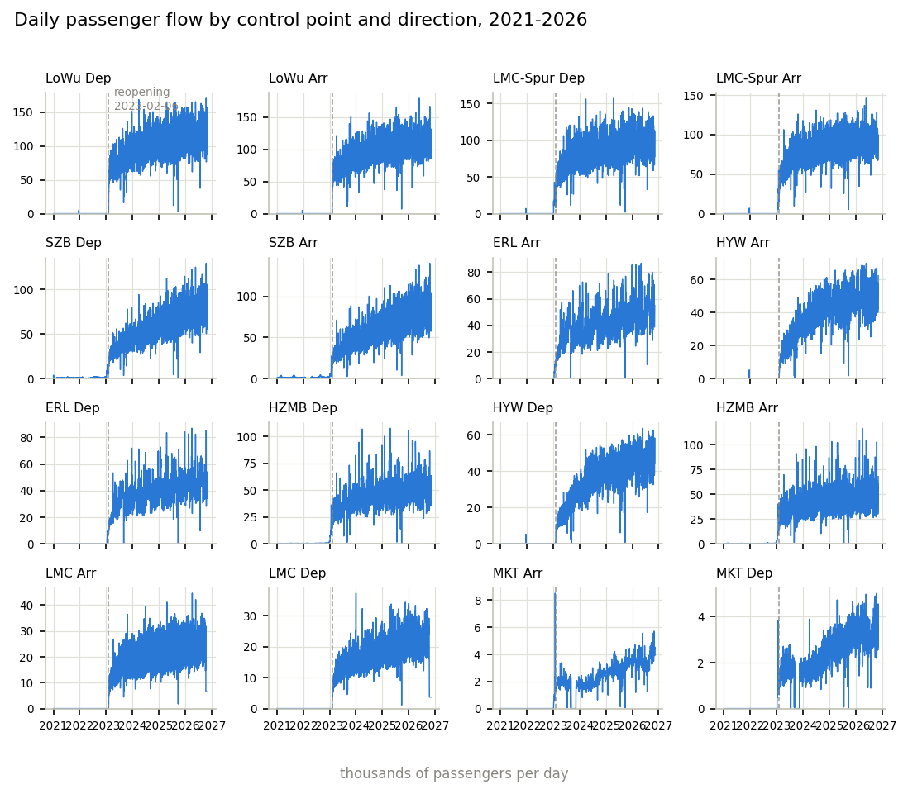
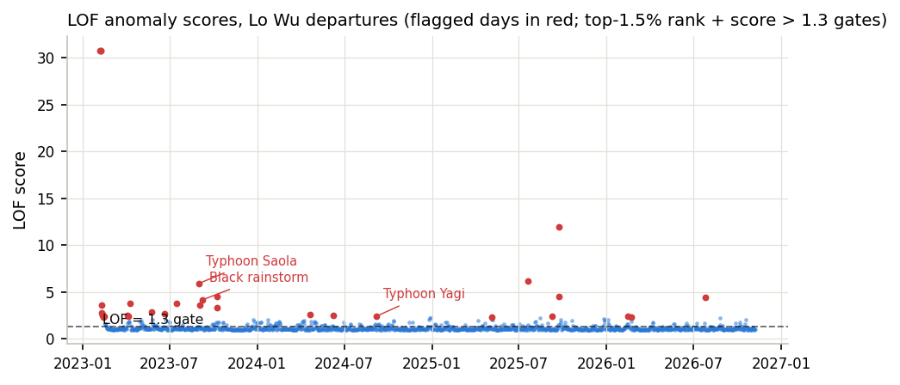
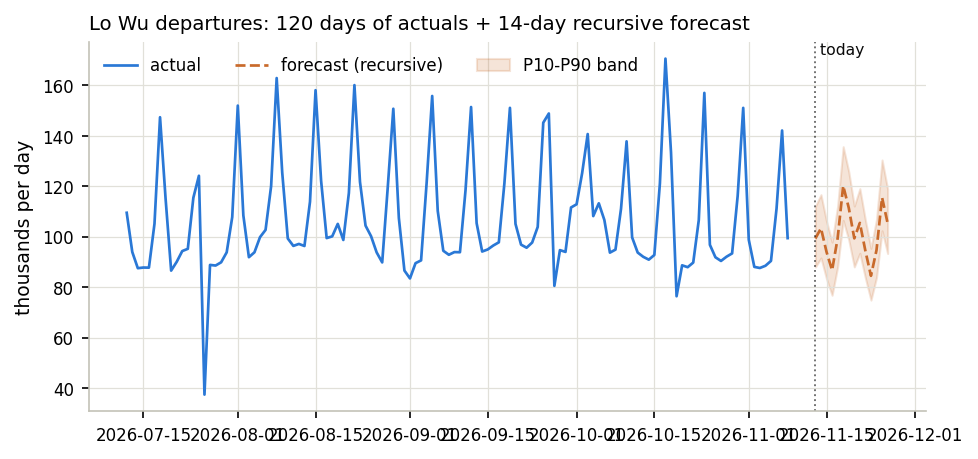
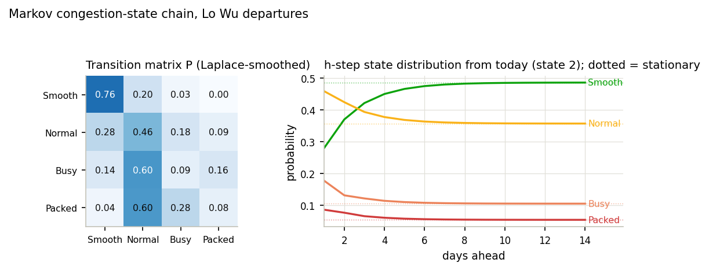
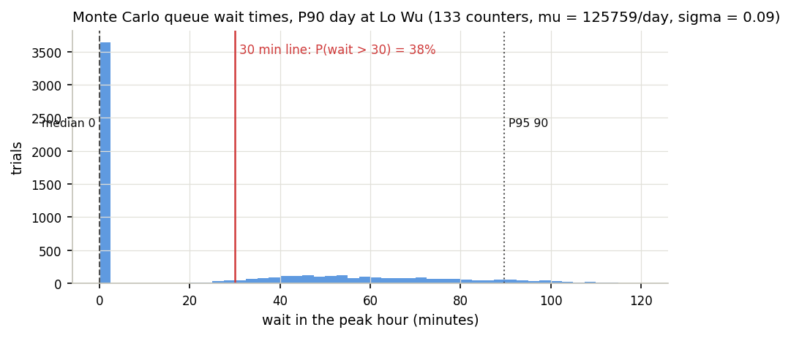
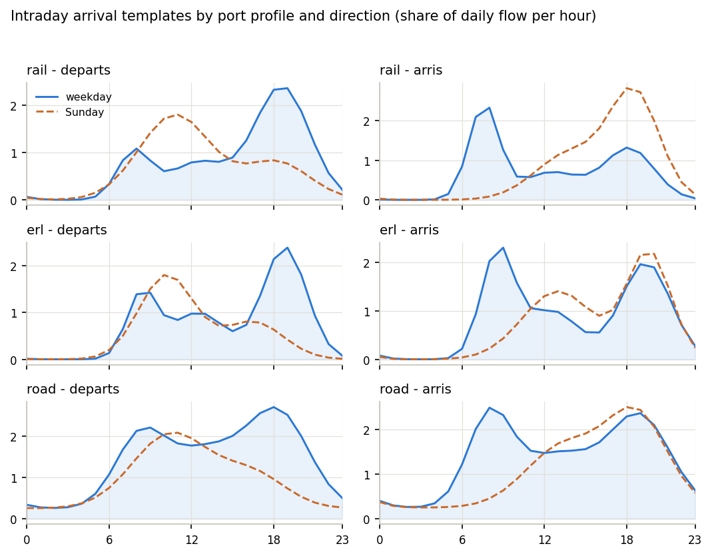
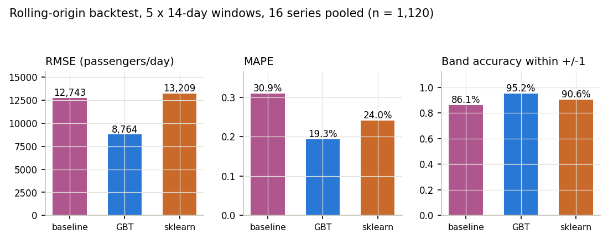
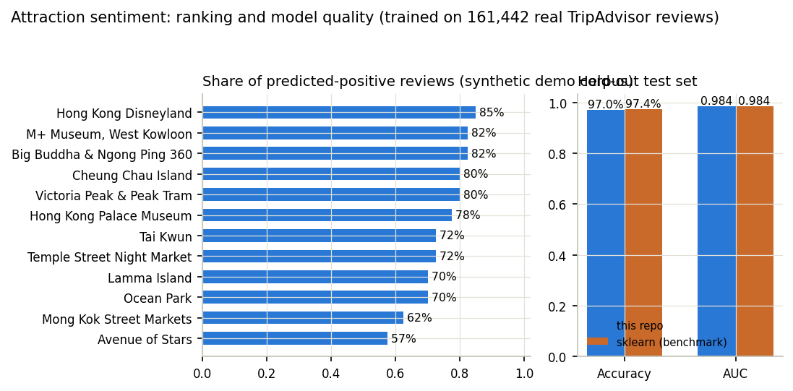

BorderPulse 代码导读
写给不写代码的读者：33 个文件各自在做什么、彼此怎么连接
配套：BorderPulse_code.zip（提交的代码包）· 阅读日期 2026-11-15 · 组内学习材料，不属于提交物。本页图片引用同目录的 figs/ 文件夹。
0｜三种读法，按时间选
1｜这个项目是什么
BorderPulse（口岸脉搏）是一个装在手机上的香港口岸错峰过关助手： 用香港入境处每天公布的过关人次，提前 14 天预测 8 个陆路口岸、进出两个方向共 16 条序列的拥挤程度， 告诉用户换日子、换口岸、换方向，还是挑个顺的时段；再用排队模拟把"那天有多少人"翻译成 "要排多久"；旁边还有一条情感分析支线，推荐人多时值得去的错峰景点。
它是一个 PWA（Progressive Web App，网页形态的 App）：用手机浏览器打开一次， 就能"添加到主屏幕"像 App 一样使用，而且完全离线可用——到了罗湖口岸没信号也能查。
整个产品分两条线，这是理解全部代码的钥匙：
| 🖥 线下：电脑上跑的 Python 流水线（跑一次，几分钟） | 📱 线上：手机浏览器里的应用（每次打开） |
|---|---|
| 读官方 CSV → 清洗异常 → 造特征 → 训练预测模型 → 算档位概率和排队风险 → 把结果打包成一个小文件 data.json | 浏览器读 data.json，把数字画成热力日历、对比卡片、排队模拟；排队模拟用 JavaScript 在手机上现场再算一遍（同一套公式和常数） |
| 重活累活都在这里干：6 万行数据、56 个特征、400 棵树、3000 次模拟 | 手机上零负担：不用服务器、不用算力，打开即用 |
换句话说：预测是"预制"的，体验是"现热"的。手机端唯一现场计算的是排队模拟（因为它要按用户选的口岸和日期即时出结果）。
2｜全景图：一张图看懂 33 个文件
箭头方向 = 数据流动方向。颜色分类：蓝 = Python 代码 · 青 = 前端文件 · 黄 = 数据文件 · 绿 = 质检与测试 · 灰 = 外部数据源。
3｜产品的样子：五个页签
App 底部有五个按钮（index.html 里的底部导航，由 app.js 切换显示）。 日历的四档拥挤色与报告图、前端完全一致：■ 顺 ■ 缓 ■ 忙 ■ 爆。
4｜推荐阅读顺序 + 逐文件精讲
顺序原则：跟着数据走一遍——从原始数字出发，走到手机屏幕为止。
第 1 步 · 项目名片
README.md
项目的门面：一段话介绍产品、在线地址、四个功能页签说明、流水线示意、回测成绩表、数据来源清单、目录结构、本地运行命令。 外人（包括评分老师）对项目的第一印象几乎都来自它。
第 2 步 · 数字从哪来
data/SOURCES.md
数据"户口本"：5 个数据集各自的用途、官方链接、粒度、核验状态（全部于 2026-11-09 逐条验证过）。 里面还记录了一条重要的 Day-1 发现：海关 C&ED 只有年度粒度，做不了日容量分母， 于是排队模型的"容量"改由各口岸自身历史高分位数（P90 日负荷）反推——这是数据现实倒逼设计的典型例子。
data/raw/immd_daily.csv
唯一的原始数据文件：3.4 MB、约 6.3 万行、2021-01-01 至今。每行 = 某口岸 × 入境/出境 × 身份（港人/内地客/其他）× 日期 的人数。 用 Excel 就能打开看。2023 年 2 月 6 日复关之前的空档期也在这里——这是特征工程里"复关断点"的来源。
第 3 步 · 先看产物，再看工厂
docs/data.json
60 KB 的 JSON 文件，手机 App 只"读"它、不在手机上重新预测。内容包括：16 条序列 × 14 天的预测（含 P10–P90 区间）、 档位概率、每序列最近一次官方实测、60 天迷你走势（画对比页的小折线用）、分时模板、开闭关时间、 异常日统计、以及一张"模型卡"（56 个特征 / 400 棵树 / 回测成绩，关于页展示的就是它）。
第 4 步 · 流水线总调度
src/build_docs.py
流水线的"总调度"，一条命令 python src/build_docs.py 从 CSV 跑到 data.json。顺序是： 读 CSV → 筛序列（数据 ≥45 天且日均 ≥50 人的才保留——沙头角这种小口岸因为数字太小、百分比动辄暴涨而被筛掉）→ LOF 剔异常 → 节假日系数 → 特征面板 → 训练 GBT → 递归预测 14 天 → 马尔可夫档位 → 分时模板 × 每小时排队风险 → 打包。
它自己不发明算法，只负责把 models/ 里的六个模块按正确顺序串起来，并把结果整理成前端要的格式。
第 5–10 步 · 六个模型模块（流水线的车间）
src/models/lof.py —— 质检员
LOF（Local Outlier Factor，局部异常因子）的思路很直觉：看一个点在邻居当中是否显得"孤单"。 台风天关口关闭、客流断崖式下跌，这种日子如果混进训练集，模型会把灾难当成规律学进去。
这里用了双闸门：LOF 分数 > 1.3 且 排进该序列前 1.5% 才标记——单用分数会误伤正常高峰， 加上比例闸门后既抓得住异常又不冤枉好数据。被它独立抓出来的有：台风苏拉（2023-09-01/02）、 破纪录黑雨（2023-09-08）、台风摩羯（2024-09-06）。全部序列合计标记 411 天，只从训练集中剔除，不用于预测。
src/models/features.py —— 翻译官 + 备课员
模型只认数字。这个文件把每个"日期"翻译成 56 列数字：星期几、月份、是否节日、处于假期的前段/中段/后段、 复关断点（2023-02-06）前后、以及过去 1/7/14/28 天的客流（"滞后特征"——递归预测时，未来的预测值会顶替成新的"昨天"）。
另一个关键决定是 16 条序列合并训练（pooled panel）：罗湖的数据量大，沙头角以外的中型口岸靠"借"全体口岸的经验也能学得像样。
src/models/gbt.py —— 主力预测员
GBT（梯度提升树）= 400 棵小决策树接力纠错：第一棵树先粗猜，后面每棵专攻前面留下的错误，加起来越来越准。 三个让它在新数据上稳住的设计：① 预测目标取对数客流（客流是倍数式波动，取对数后误差才对称）； ② 早停（验证集不再进步就停手，防死记硬背）；③ 直方图分箱分裂（快且稳）。
递归预测 14 天：第 1 天的预测会被当作"已知昨天"喂回去算第 2 天，如此滚动——就像下棋连看十四步，误差会累积， 所以早停的"稳"特别重要。回测证明这套组合的误差比"按星期几估"低 31%。
src/models/markov.py —— 状态推演员
把每天客流按这条序列自己的 P50/P85/P95 分位切成四档（顺/缓/忙/爆），再从历史数出"今天缓，明天各档的概率"—— 这就是马尔可夫链：只看今天的状态推明天，不需要知道为什么。档位切分用每条序列自己的分位数（自标定）， 所以罗湖的"缓"和文锦渡的"缓"各自贴合自身水平，小口岸不会被大城市淹没。
它从"今天实测所在档位"出发往后推 14 天，与 GBT 互相独立——日历详情里那行"历史规律"就是它， 两条判断可以互相印证。
src/models/mc_queue.py —— 排队翻译官
旅客不关心人数，关心排多久。排队论的经典公式 Erlang-C（M/M/c 模型：随机到达、c 个柜台、固定服务速度） 给出未饱和时的期望等待；但当利用率 ρ ≥ 0.97，稳态公式会发散，而现实大厅只会"饱和"—— 于是改用三角分布（20 / 45 / 120 分钟）封顶模拟滞留。
输入不是定值而是分布：日客流按对数正态抽 3000 个"可能的当天"（蒙特卡洛），汇总成三块决策瓦片： P(排队>30 分钟)、中位等待、P95 等待。柜台数由该口岸历史 P90 日负荷反推（让 P90 那天跑 95% 利用率，至少 4 个）。 所有常数（最忙小时占全天 12%、每人 30 秒等）都在文件里公开写明。
src/models/nlp.py —— 评论情感分析（旁路）
把评论变成"好评/差评"判断：TF-IDF 先把每条评论转成数字向量（一个词在这条评论出现、但在整个语料里罕见，权重就高）， 类平衡的逻辑回归再学出"什么样的词组合预示差评"，并处理否定范围（"not good" 不能只看 good）。
训练语料是 16.1 万条真实带标签的 TripAdvisor 景点评论（因授权与体量原因不随代码包分发，README 有说明）。 App 里展示的香港景点评论是明确标注的演示语料；判断模型本身只用真实评论训练。
第 11 步 · 成绩单
src/backtest.py + report/backtest.json
"时光倒流"式的考试：在数据末端取 5 个互不重叠的 14 天窗口；每个起点只允许用它之前的数据重新训练 （连 LOF 清洗也重算），再预测之后 14 天、对答案——评估里不含任何未来信息，完全模拟产品上线时的真实处境。 三个选手同场：星期中位数基线、GBT、sklearn 同类模型（仅作外部对照）。成绩（1120 条预测）：
| 选手 | RMSE（平均误差，人） | MAPE | 档位命中 | ±1 档命中 |
|---|---|---|---|---|
| 星期中位数基线 | 12,743 | 30.9% | 32.8% | 86.1% |
| GBT（本产品） | 8,764 | 19.3% | 64.3% | 95.2% |
| sklearn 对照 | 13,209 | 24.0% | 56.4% | 90.6% |
结果写入 backtest.json，报告里的评估图（fig05）直接读它——报告数字与代码产物同源，可复核。
第 12 步 · 前端五件套（应用的身体）
docs/index.html —— 骨架（约 120 行）
只放"空壳"：应用栏（标题 + 繁/簡/EN 切换）、五个空页签容器、底部导航、点开某天时滑出的详情弹层。 所有内容由 app.js 动态填入。唯一例外是"关于"页有一份静态简体内容—— 即使脚本没加载，用户也能看到基本说明。
docs/app.js —— 大脑（最大的文件，约 1500 行）
App 的一切行为都在这里：文件开头是一张三语文案表（每种语言的每一句界面文字，切换语言就是换查这张表）； 然后是五个页签的渲染——日历热力图与当日详情（逐小时条、当前时间线、最佳 2 小时窗口、最近实测、马尔可夫行）、 对比页（P85/P95、60 天迷你折线、× 倍数、换口岸建议）、排队页、景点页、关于页。
排队页是亮点：mc_queue.py 的同一套 Erlang-C + 蒙特卡洛逻辑，用 JavaScript 原样再实现一遍—— 同常数、同随机种子（7005），在用户手机浏览器里现场跑 3000 次模拟，结果与电脑端可互相复现。
docs/styles.css —— 外观
四档拥挤色的色阶、卡片式布局、明/暗两套主题（跟随系统）、手机优先的排版、大字号与高对比（无障碍）。
docs/sw.js —— 缓存管家（61 行）
Service Worker：让网页变 PWA 的关键。策略只有两条——界面外壳（HTML/CSS/JS/图标）cache-first（很快、很少变）； data.json network-first（在线先拿最新数据顺手更新缓存，断网回退到上次存的）。 文件里一个版本号（如 bp-0.3.10）一变，整套缓存自动作废重装——发布新版的开关就在这。
docs/manifest.webmanifest + docs/icons/
manifest 是"添加到主屏幕"时手机读的安装信息（名字、主题色、图标清单）；icons/ 里是各尺寸图标 PNG（由 make_icons.py 用 Pillow 生成）。
第 13 步 · 报告的图从哪来
src/make_figures.py
报告 12 张插图的总工厂（matplotlib）：数据总览、复关对比、节假日系数、LOF 时间线、回测对比、特征重要性、 预测扇形图、马尔可夫矩阵、排队分布、分时模板、NLP 结果。其中预测扇形图直接读产品的 docs/data.json——报告画的和用户看到的是同一份数字。
第 14 步 · 六个体检脚本
_build/（6 个 .js）
用 Playwright 驱动一个真的无头 Edge 浏览器，对着本地起的服务把 App 每个页签点一遍、量一遍—— 改代码后跑一轮，等于给界面做"回归体检"（详见 §8）。
5｜前端文件之间怎么配合
6｜报告插图对照：哪张图是哪个文件画的
12 张报告图全部出自 src/make_figures.py（本页 figs/ 文件夹内即其输出）。挑几张关键的：








fig02（复关前后对比）、fig03（节假日系数）、fig05b（分序列 RMSE）、fig06（特征重要性）同出一厂，报告里均有。
7｜小词典：被问到术语时这样说
- CSV / JSON
- 两种最常见的存数据的文本格式。CSV 像一张表格（Excel 能直接开）；JSON 像"贴了标签的收纳盒"，程序读起来更方便，data.json 就是。
- Python / JavaScript
- Python 跑在电脑上，负责重活（训练模型）；JavaScript 跑在浏览器里，负责把结果画出来、和用户互动。本项目两端各司其职。
- NumPy / pandas / matplotlib
- Python 的三个工具库：NumPy 算数字（矩阵运算），pandas 整理表格，matplotlib 画图。本项目所有算法只依赖 NumPy，逻辑透明、可在浏览器端对照复现。
- 特征 / 特征工程
- 把"2026-11-22"这种人类信息翻译成数字列（星期日=1、圣诞前夕=1、过去7天均值=…）的过程。模型只见特征，不见日历。
- LOF（局部异常因子）
- 异常检测方法：一个点在自己的邻居圈里越"孤单"，越可能是异常。这里用来挑出台风/暴雨日。
- GBT（梯度提升树）
- 许多小决策树接力纠错的集成模型。本项目用直方图变体：400 棵、对数目标、早停。
- 递归预测
- 预测第 1 天 → 把它当"已知"再预测第 2 天 → … 滚动到第 14 天。像下棋连推十四步。
- 马尔可夫链
- "明天只取决于今天"的概率模型。这里：四档拥挤状态之间的流转概率表。
- Erlang-C / M/M/c
- 排队论经典公式：随机到达、c 个柜台、固定服务速度时，平均要等多久。
- 蒙特卡洛
- 用大量随机抽样回答"结果大概会怎样"：抽 3000 个"可能的当天"，数一数多少天排队超半小时。
- TF-IDF / 逻辑回归
- 前者把文字变成数字向量（稀有词权重高）；后者最简单常用的分类器，这里判断好评/差评。
- 回测 / RMSE / MAPE
- 回测=用历史"模拟考试"（只用当时可知的数据）；RMSE=平均误差（人数）；MAPE=平均百分比误差。
- P50 / P85 / P95 / 分位数
- "把 100 天按大小排队，第 50/85/95 名的值"。用来定拥挤档位边界和预测区间，比单一均值更能表达不确定性。
- 随机种子（seed）
- 给随机数发生器定的"起点"。种子相同（本项目 7005），每次抽样的结果完全一样——演示可复现的关键。
- PWA / Service Worker / manifest
- PWA=能装进手机、可离线的网页；Service Worker=浏览器里的缓存管家；manifest=安装信息卡。
- cache-first / network-first
- 两种取文件策略：先查缓存（快）/ 先联网拿新（鲜）。本项目外壳用前者、数据用后者。
- 无障碍（a11y）
- 让读屏软件、色弱用户也能用：语义标签、文字标注、高对比。项目有专门测试脚本把关。
8｜六个测试分别在守什么
都在 _build/ 里，Playwright 驱动真浏览器（无头 Edge）访问本地服务，模拟真实手机视口（375×812、可触摸）。
| 脚本 | 它做的事 |
|---|---|
| local_test.js | 主冒烟测试：打开 App，点开"今天"的日历格，逐项检查详情弹层——逐小时条有没有画、"现在"时间线、最佳窗口标记、最近实测值、马尔可夫行、景点页卡片，并截图存档。 |
| cmp_test.js | 对比页秩序：带"推荐"标记的口岸卡片必须排在第一位——保证用户第一眼看到的就是当日最佳选择。 |
| lang_test.js | 三语一致性：繁/簡/EN 每种语言下，每个界面的文案都完整、无漏译、无串页。 |
| en_label_check.js | 英文模式专项：口岸名等长标签不许被截断、页面不许横向溢出（英文比中文长，最容易撑破布局）；有问题时以非零退出码报错。 |
| a11y_test.js | 无障碍体检：图片有替代文字、按钮有语义标签、对比度达标——读屏软件可用的底线。 |
| shots.js | 给各页签拍标准截图，存入 shots/，用于报告、演示和前后对比。 |
9｜数字速查（答辩前扫一眼）
| 维度 | 数字 |
|---|---|
| 口岸 × 方向 | 8 个陆路口岸 × 进/出 = 16 条序列（沙头角因数据量小被筛选规则排除） |
| 原始数据 | 3.4 MB · 约 6.3 万行 · 2021-01 至今 · 入境处每日公布 |
| 训练面板 | 21,541 行 · 56 个特征 · 16 序列合并训练 |
| 主模型 | 400 棵直方图梯度提升树 · 对数目标 · 早停 · 递归 14 天 |
| 异常清洗 | 411 天被标记剔除（双闸门：LOF>1.3 且前 1.5%） |
| 回测 | 5 个窗口 × 14 天 × 16 序列 = 1,120 条预测；RMSE 8,764（基线 12,743，−31%；sklearn 对照 13,209）；档位命中 64.3%，±1 档 95.2% |
| 排队模拟 | 3,000 次抽样 · 最忙小时占全天 12% · 每人 30 秒 · ρ≥0.97 转饱和模拟 · 封顶 120 分钟 · 种子 7005 |
| 情感分析 | 161,442 训练 / 17,939 测试条真实评论 · TF-IDF + 类平衡逻辑回归 |
| 产品 | 5 个页签 · 3 语 · data.json 60 KB（224 行预测）· 全离线 |
| 质量保障 | 6 个浏览器回归测试 · 12 张报告图 · 全部假设在"关于"页公开 |
10｜常见问答
Q1 没网为什么还能用？
第一次打开时 sw.js 把界面和 data.json 全部存进手机；之后 data.json 在线优先拿新、离线用缓存，外壳永远从本地读。所以站在罗湖口岸没信号也查得到。
Q2 预测凭什么可信？
滚动回测只允许使用"当时可知"的数据：5 个时点、每个都用之前的数据重训（连异常清洗都重算），共 1,120 条预测的误差比"按星期几估"低 31%，也优于 sklearn 对照实现。数字出自 backtest.py，报告图 fig05 同源。
Q3 明天刮台风怎么办？
模型不预测天气与突发管制：异常日被 LOF 从训练中剔除，"关于"页明示此边界。它回答的是"按历史规律，哪天相对顺"。
Q4 "每小时人数"是官方数据吗？
不是。入境处不公布分时数据。产品用"口岸类型 × 方向 × 星期几"的日内模板给出一天 24 小时的形状，再按当日预测总量缩放——假设在关于页公开。
Q5 景点评论是真的吗？
判断"好评/差评"的模型只用 16 万条真实带标签评论训练；App 内展示的香港景点评论是明确标注的演示语料（授权与体量原因不随包分发）。
Q6 手机里算的和电脑一致吗？
排队模拟是同一套 Erlang-C + 蒙特卡洛：同常数、同随机种子（7005），两端结果可互相复现——这是把模拟放进浏览器的前提。
Q7 为什么整套算法基于 NumPy 与原生 JS？
两个原因：数值逻辑全程透明、可逐行审查；排队模拟因此能在浏览器端原样复现。sklearn 只作外部对照基准，不进产品。
Q8 被问到某段代码答不上来怎么办？
先在 §2 全景图指出它的位置和上下游，再讲它解决什么问题、为什么这么设计；每个文件开头都有中文说明。讲清"为什么"比背"怎么写"更得分。
11｜个人问答环节：最可能被问的 29 题（英文回答 + 中文对照）
① 开场大局题 · Almost-certain openers
Q1 · Tell me about your project. What does it do?
（介绍一下你们的项目，它是做什么的？）
EN: BorderPulse is a mobile web app that helps travellers avoid congestion at Hong Kong's land border control points. You open it, pick northbound or southbound, and see a 14-day congestion calendar for eight crossings, a same-day comparison of ports, a live queue-risk simulation, and ranked attractions for days when no crossing is calm. It works fully offline on a phone, in three languages.
中文：BorderPulse 是一个手机网页应用，帮过关人士错峰通行。打开后选择北上或南下，就能看到 8 个口岸未来 14 天的拥挤日历、同日口岸对比、浏览器里现场跑的排队风险模拟，以及"没有一天顺"时可选的景点推荐。手机上三语、完全离线可用。
Q2 · How is the project implemented? Give me the big picture.
（项目是怎么实现的？给我讲个大框架。）
EN: It is a two-track system. Offline, a Python pipeline turns official Immigration Department daily statistics into everything the product needs — anomaly cleaning, a pooled gradient-boosted-tree forecast over 16 port-by-direction series for the next 14 days, a Markov model of four congestion bands, and a Monte Carlo queue model — and packs the outputs into a 60-kilobyte data.json. Online, a progressive web app renders that file; the only computation in the browser is the queue simulation, re-implemented in JavaScript with the same constants and seed.
中文：双轨实现。离线端，一条 Python 流水线把入境处官方日统计变成产品所需的一切——异常清洗、合并训练的梯度提升树预测 16 条"口岸×方向"序列未来 14 天、四档拥挤的马尔可夫模型、蒙特卡洛排队模型——全部产出打包成 60 KB 的 data.json。在线端，一个 PWA 前端渲染这个文件；浏览器里唯一的计算是排队模拟，用同一套常数和种子以 JavaScript 重写。
Q3 · What models or methods did you use?
（你们用了哪些模型和方法？）
EN: Five main ones. Local outlier factor with a two-gate rule for cleaning; gradient-boosted regression trees on 56 calendar and lag features for forecasting; a self-calibrated Markov chain over four congestion bands; an Erlang-C Monte Carlo simulation for queue risk; and TF-IDF with class-balanced logistic regression for review sentiment. All are implemented in NumPy, with scikit-learn kept strictly as a labelled benchmark.
中文：五个主力方法：双闸门的局部异常因子做清洗；56 个日历与滞后特征上的梯度提升回归树做预测；自校准的四档马尔可夫链；Erlang-C 蒙特卡洛排队模拟；TF-IDF 加类平衡逻辑回归做评论情感。全部用 NumPy 实现，sklearn 只作标注清楚的对照基准。
Q4 · What data is the project built on?
（项目用什么数据做的？）
EN: The core is the Immigration Department's daily passenger statistics on data.gov.hk — about 63,000 rows from 2021 to now, one count per control point, direction and day. Around it we use a hand-built holiday calendar for both sides of the border, C&ED annual throughput as a capacity sanity anchor, and a Kaggle TripAdvisor corpus of over 160,000 labelled reviews for the sentiment model. Every source is documented with links and verification notes in data/SOURCES.md.
中文：核心是 data.gov.hk 上入境处的每日过关人次——2021 年至今约 6.3 万行，每行是"口岸×方向×日期"的一个人数。外围有手工整理的两地假期日历、海关年度通关量（容量合理性锚点）、以及训练情感模型的 16 万多条带标签 Kaggle TripAdvisor 评论。每个来源的链接与核验记录都在 data/SOURCES.md。
Q5 · What was your own contribution?
（你个人负责哪部分？）
EN: My primary part was 〔the components listed under my name in the contribution statement〕. Because this session can cover anything, I also went through the whole pipeline — for instance, if you ask me about a module another member led, I can explain how it works and why we built it that way.
中文：我主要负责的就是贡献声明里列在我名下的那些部分。因为问答可覆盖任何部分，我也把整条流水线过了一遍——即使问到其他组员主导的模块，我也能讲清它怎么工作、为什么这么做。
Q6 · How do you know the product actually works?
（怎么证明产品是有效的？）
EN: Two kinds of evidence. At the model level, a rolling-origin backtest — five windows of 14 days, 1,120 predictions in total — where our forecast cuts RMSE by about a third against a weekday-median baseline and also beats a labelled scikit-learn configuration. At the product level, six browser regression tests run against the real app, and every assumption is disclosed on the About page.
中文：两类证据。模型层面：滚动起点回测，5 个 14 天窗口、共 1,120 条预测，RMSE 比"星期几中位数"基线低约三分之一，也优于标注的 sklearn 对照配置。产品层面：6 个浏览器回归测试对着真实 App 跑，所有假设都在"关于"页公开。
② 设计选择 · Design choices
Q7 · Why did you build this? Who is it for?
（为什么做这个产品？给谁用？）
EN: Crossing Hong Kong's land border on a bad day means hours of queueing, and the official data that would help avoid it is published but hard to use as raw tables. The product turns that data into a decision: cross-border commuters and weekend travellers get a 14-day calendar, a port comparison and a queue-risk number, all on one page that works offline.
中文：香港陆路口岸赶上高峰要排几个小时队；官方其实公布了数据，但原始表格没人能直接拿来决策。产品把数据变成决策：跨境通勤者和周末旅客在一页里看到 14 天日历、口岸对比和排队风险，还支持离线使用。
Q8 · How does the app decide a day is good or bad?
（App 怎么判断某天顺不顺？）
EN: Each port-and-direction series is forecast for the next 14 days, and every forecast day is placed into one of four bands — Smooth, Normal, Busy, Packed — using thresholds calibrated from that port's own history. The calendar simply colours the grid by band, so the judgement is visible at a glance.
中文：每条"口岸×方向"序列预测未来 14 天，每天的预测值按该口岸自身历史校准的四档阈值（顺/缓/忙/爆）归档。日历只是把档位涂成颜色，判断结果一眼可见。
Q9 · Why forecast daily volume per port and direction, and why 14 days?
（为什么预测"每个口岸×每个方向"的日人数？为什么是 14 天？）
EN: The product serves a traveller choosing when and where to cross, and that decision is made days ahead. ImmD publishes one number per port, direction and day, so daily volume per series is the natural target, and fourteen days covers two weekends plus a public holiday — the realistic planning window.
中文：产品服务的是"挑哪天、走哪个口岸"的决策，而决策往往提前几天做出。入境处每个口岸×方向×日期只公布一个人数，所以每条序列的日总量是天然目标；14 天正好覆盖两个周末加一个假期，是真实的规划窗口。
Q10 · Why gradient-boosted trees rather than a classical time-series model?
（为什么用梯度提升树，而不是经典时序模型？）
EN: Border flow is calendar-driven rather than trend-driven: peaks come from holidays, weekdays and their interactions, with abrupt regime shifts such as the February 2023 reopening. Trees learn these nonlinear effects directly from date features, with no differencing or stationarity assumptions. The rolling backtest confirmed the choice — RMSE 8,764 against 12,743 for the weekday-median baseline.
中文：口岸人流由日历驱动而非趋势驱动：高峰来自假期、星期几及它们的交互，还有 2023 年 2 月复关这类突变。树模型直接从日期特征里学这些非线性效应，不需要差分、不需要平稳性假设。滚动回测验证了这个选择——RMSE 8,764，对比"按星期几取中位数"基线的 12,743。
Q11 · How were the four congestion bands defined?
（四个拥挤档位是怎么定的？）
EN: They are self-calibrated per series from that series' own recent daily distribution, using the P50, P85 and P95 quantiles as cut points, so "busy" means busy relative to the port's own history rather than an absolute number. The same thresholds feed the Markov chain, which models how congestion moves between bands from one day to the next.
中文：四档由每条序列自己近期的日总量分布自校准，用 P50/P85/P95 三个分位数做切点，所以"忙"是相对该口岸自身历史而言，不是绝对人数。同一组切点喂给马尔可夫链，刻画拥挤在档位之间的逐日流转。
③ 模型细节 · Modelling details
Q14 · Explain the anomaly cleaning. Why two gates?
（讲讲异常清洗。为什么要两道闸门？）
EN: We run local outlier factor on log volumes. A single threshold over-flagged quiet series, where small absolute spikes are large in relative terms, so a day is removed only if it passes both gates — LOF above 1.3 and a score in the top 1.5 percent. That flagged 411 days, and inspecting them shows real disruptions: Saola, the September 2023 black rainstorm, and Yagi.
中文：我们对对数人流做局部异常因子检测。单一阈值会误伤安静的序列——绝对量很小的波动在相对意义上也很大——所以一天要同时过两道闸门才剔除：LOF>1.3 且得分排前 1.5%。共标记 411 天，逐一核验都是真实事件：台风苏拉、2023 年 9 月黑雨、台风摩羯。
Q15 · What goes into the 56 features?
（56 个特征都有什么？）
EN: Calendar features — weekday, holiday flags and festivity windows for both sides of the border — plus lag terms, rolling means and a reopening-anchored time index. All sixteen series are pooled into one panel of 21,541 rows, so scarce holiday evidence is shared across ports instead of being seen by one series alone.
中文：日历特征（星期几、两地假期标记、节庆窗口），加滞后项、滚动均值和以复关为锚的时间索引。16 条序列合并成 21,541 行的训练面板，让稀缺的假期样本在口岸之间共享，而不是只被某一条序列见过。
Q16 · Why a log target, and why early stopping?
（为什么对目标取对数？为什么早停？）
EN: Ports differ by an order of magnitude in volume; taking logs turns absolute errors into relative ones, so a single pooled model serves all series. Early stopping on a chronological holdout with patience 40 keeps the 400 trees from memorising holiday spikes that appear only a few times in the data.
中文：各口岸体量相差一个数量级，取对数把绝对误差变成相对误差，一个合并模型就能服务全部序列。按时间顺序留出验证集做早停（耐心值 40），防止 400 棵树把数据里只出现过几次的假期尖峰"背下来"。
Q17 · There is no official queue data. Where do the queue parameters come from?
（没有官方排队数据，排队模型的参数从哪来？）
EN: They are self-calibrated from the same ImmD series. Counter capacity comes from the P90 day at 95 percent utilisation with a floor of four counters; service takes 30 seconds per person; and once utilisation reaches 0.97 the simulation switches to a saturated regime whose wait follows a triangular distribution capped at 120 minutes. Three thousand draws with a fixed seed then give the probability of waiting more than 30 minutes.
中文：全部从同一份入境处序列自校准。柜台数按 P90 日负荷、95% 利用率反推，下限 4 个；服务速率每人 30 秒；利用率一旦达到 0.97 就切换到饱和模式，等待时长用三角分布（20/45/120 分钟）封顶。再用固定种子的 3,000 次抽样，得到"排队超 30 分钟"的概率。
Q18 · Explain the sentiment pipeline and its corpus.
（讲讲情感分析这条线，以及语料情况。）
EN: TF-IDF over unigrams and bigrams with negation-scope tokens, then a class-balanced logistic regression, trained on 161,442 real labelled TripAdvisor reviews and tested on 17,939 held-out ones — accuracy 0.970, against 0.974 for the labelled scikit-learn benchmark. The Hong Kong reviews shown inside the app are a clearly labelled synthetic demonstration set, because the real corpus cannot be redistributed under its licence.
中文：对一元和二元词组做 TF-IDF，加入否定辖域标记，再接类平衡逻辑回归；用 161,442 条真实带标签的 TripAdvisor 评论训练、17,939 条留出评论测试，准确率 0.970，对照的 sklearn 基准为 0.974。App 内展示的香港评论是明确标注的合成演示语料，因为真实语料按授权条款不能随包分发。
④ 代码实现 · Code walkthrough
Q21 · Walk me through src/build_docs.py.
（带我从头讲一遍总调度文件。）
EN: It is the one-command orchestrator. It loads the CSV, filters series by the 45-day and median-50 rules, cleans anomalies, builds the feature panel, trains one pooled GBT, forecasts each series recursively for fourteen days, derives the Markov bands and intraday templates, and assembles everything into the 60-kilobyte data.json that the app reads.
中文：它是一条命令的总调度：读入 CSV → 按"数据 ≥45 天且日均 ≥50 人"筛选序列 → 异常清洗 → 构建特征面板 → 训练一个合并 GBT → 逐序列递归预测 14 天 → 导出马尔可夫档位与分时模板 → 全部组装成 App 读取的 60 KB data.json。
Q22 · Why is there no Python in the app itself?
（为什么 App 里没有 Python？）
EN: All heavy computation happens at build time on the computer, and the app ships only its compact outputs. The one exception is the queue simulation, re-implemented in JavaScript with the same constants and the same seed, so it runs offline in the browser and reproduces the Python numbers exactly.
中文：所有重计算在建包时于电脑上完成，App 只携带轻量产物。唯一的例外是排队模拟——用同一套常数、同一个随机种子以 JavaScript 重写，因此能在浏览器里离线运行，且结果与 Python 端完全一致。
Q23 · How do you know a change hasn't broken anything?
（怎么保证改了代码没改坏东西？）
EN: Six regression scripts in the _build directory drive the real app in headless Edge against a local server, covering the calendar, the compare-page ordering, language switching and label overflow. At the pipeline level, reruns are reproducible to the byte, and the metrics in backtest.json serve as the reference.
中文：_build 目录下的 6 个回归脚本用无头 Edge 对着本地服务运行真实 App，覆盖日历、对比页排序、语言切换和标签溢出。流水线层面，重跑做到逐字节可复现，backtest.json 里的各项成绩就是基准参照。
⑤ 结果与局限 · Results and limitations
Q26 · Your model beat the scikit-learn implementation. Why?
（你们的模型为什么跑赢了 sklearn 实现？）
EN: In our backtest configuration, yes — 8,764 versus 13,209 RMSE. The reason lies in the forecasting regime rather than the algorithm class: our implementation uses early stopping and conservative histogram regularisation tuned for recursive multi-step prediction under drift, while the library defaults under-regularise in this setting. We report it as a configuration finding, and scikit-learn remains strictly a labelled benchmark.
中文：在我们的回测配置里确实如此——RMSE 8,764 对 13,209。原因在预测范式而非算法大类：我们的实现用了早停和偏保守的直方图正则，专门针对漂移环境下的递归多步预测；库的默认配置在这种场景正则不足。我们把它作为配置层面的发现写进报告，sklearn 始终只作标注清楚的对照基准。
Q27 · What are the main limitations?
（项目的主要局限是什么？）
EN: Four honest ones. There is no official hourly data, so the intraday curves are labelled model estimates. C&ED publishes only annual throughput, so queue capacity is self-calibrated. Weather is deliberately excluded to keep results reproducible. And the queue model is a simplified single-pool abstraction of many separate counters. All four are disclosed on the product's About page.
中文：四条实话：没有官方分时数据，逐小时曲线是明确标注的模型估算；海关只公布年度通关量，排队容量属于自校准；为保证结果可复现，刻意不接入天气；排队模型是把众多柜台抽象成单队列的简化模型。四条全部公示在产品的"关于"页。
⑥ AI 使用 · Use of AI
Q29 · How did the group use AI, and how do you defend AI-assisted code?
（小组怎么用 AI？AI 写的代码你如何辩护？）
EN: As declared in the report: Li Baixi used Claude Code and GLM through a VSCode extension to draft code, then modified and debugged it himself and wrote part of the NumPy functions himself; Lin Jingyu and Lu Zengyi used Doubao and DeepSeek as chat assistants in the same drafting-and-correcting loop. Whichever member typed a line, each of us can locate it on the pipeline diagram, explain why it is there, and point to the test or figure that validates it.
中文：与报告声明一致：李柏熙通过 VSCode 插件使用 Claude Code 与 GLM 起草代码，随后自己修改调试、并亲手编写了部分 NumPy 函数；林靖宇、卢曾益以问答聊天方式使用豆包和 DeepSeek，同样走"起草—修改—调试"的流程。无论某一行是谁敲下的，每个组员都能在全景图上指出它的位置、说明它存在的理由、并指向验证它的测试或图表。
12｜项目详解：从界面到代码，一页一页讲（双语）
这一节沿着用户界面走：按"应用栏 → 日历 → 对比 → 排队 → 景点 → 关于"的页面顺序，从上到下、从外到内。每张卡片固定三层：界面功能（用户看到什么）→ 实现方法（怎么做到的）→ 代码位置（哪个文件、哪个函数）。英文段在前、中文对照在后，可直接当问答环节的口头材料。§3 看的是"产品长什么样"，§4 按文件精讲；本节按屏幕讲，两相对照效果最好。行号为当前版本约数，以在 docs/app.js 里搜索函数名为准。
⓪ 应用栏 · App bar（五页共用）
D1 · The app bar: name and mission
（标题栏：产品叫什么、为谁服务）
EN: The bar at the top carries the pulse logo and the product name, and it is where you state the mission if asked: BorderPulse is a forecast-first companion for the Hong Kong–Mainland land borders — it tells cross-border commuters, weekend travellers and holiday returnees which port, which day and which hour are likely to be smooth. The bar itself is static structure in docs/index.html; JavaScript only fills in the status line beneath the title.
中文：顶栏放的是脉搏标志和产品名；被问"这是什么"就从这里答起：BorderPulse 是面向港深陆路口岸的"预测优先"出行助手，服务跨境通勤、周末出行和假日返乡人群，回答"哪个口岸、哪一天、哪个时段更顺"。顶栏本身是 docs/index.html 里的静态结构（#appbar），JS 只负责填标题下的状态行。
📍 代码：docs/index.html（搜 #appbar）＋ docs/app.js · renderChrome()（约 L311）
D2 · The status line: measurement vs forecast
（状态行：实测与预测的分界线）
EN: Under the title a small line reads, for example, "data through 2026-11-19". It is the boundary between measurement and forecast: up to that date the app shows observed daily crossings, after it model forecasts. renderChrome() fills the line from the data_through field of data.json, so the app never lets a forecast pass as an observation.
中文：标题下方一行小字，如"数据截至 2026-11-19"。这是实测与预测的分界线：这天之前是观测到的每日过关量，之后是模型预测值。renderChrome() 从 data.json 的 data_through 字段填入这一行——App 从不让预测冒充实测。
📍 代码：docs/index.html（#meta）· docs/app.js · renderChrome() ＋ 文案键 t("meta", …)
D3 · The language buttons: 繁 / 简 / EN
（右上角按钮：一键切换三种语言）
EN: The top-right button group switches the whole app between Traditional, Simplified and English instantly. Every interface string is stored as a tc/sc/en trio in the T table at the top of app.js, and t(key) returns the one for the current language; longer bilingual paragraphs live in the CPN and ABOUT tables. setLang() saves the choice to localStorage (key bp-lang), updates the html lang attribute and re-renders the chrome and the current page, so the preference survives reloads.
中文：右上角按钮组可在 繁/简/EN 之间瞬时切换整个应用。所有界面文案以三语三元组存在 app.js 开头的 T 表里，取词函数 t(key) 按当前语言返回；较长的双语文案放在 CPN 和 ABOUT 两张表。setLang() 把选择存进 localStorage（键名 bp-lang）、更新 html 的 lang 属性并重渲染界面与当前页，刷新后偏好仍保留。
📍 代码：docs/index.html（#lang）· docs/app.js · T 表（约 L35）/ t() / setLang()（约 L298）
D4 · The bottom tab bar: five pages, lazy loading
（底部导航：五个页签与懒加载）
EN: Five bottom tabs switch the five pages: Calendar, Compare, Queue, Spots, About. setTab() shows the chosen section and hides the rest; the three heavier pages (compare, queue, spots) render lazily on first visit rather than at startup, so the default landing page — the calendar — appears immediately.
中文：底部五个页签对应五个页面：日历、对比、排队、景点、关于。setTab() 显示所选分区、隐藏其余；三个较重的页面（对比、排队、景点）采用首次访问才渲染的懒加载，而不是启动时全部渲染，因此默认落地页"日历"能立刻出现。
📍 代码：docs/index.html（#tabbar，按钮带 data-t="cal|cmp|risk|poi|about"）· docs/app.js · setTab()（约 L333）
① 日历页 · Calendar（默认首页）
D5 · Direction switch and colour legend
（方向切换与五色图例）
EN: The calendar opens with a segmented control for direction — Hong Kong to Mainland, or the reverse — and a five-colour legend. The direction matters because the same port behaves very differently the two ways (morning versus evening peaks). segDir() stores the choice, bindSeg() wires the buttons, and cpOrder() fixes the port display order per direction so rows never jump between visits.
中文：日历页顶部是方向切换（香港→内地 / 内地→香港）和五色图例。方向必须区分：同一口岸两个方向的忙闲完全不同（早高峰对晚高峰）。segDir() 记住当前方向，bindSeg() 绑定按钮，cpOrder() 固定每个方向的口岸显示顺序，行序不因切换而跳动。
📍 代码：docs/app.js · segDir()（约 L344）/ bindSeg()（约 L350）/ cpOrder()（约 L287）/ renderCal()
D6 · The 14-day heat grid
（14 天热力网格）
EN: The main grid is fourteen days across and one row per port; each cell is coloured by its forecast congestion band. Past days are trimmed at startup — the app always begins at today — and the weekday header marks today and any festive day. calBlock() builds one port row and renderCal() loops over the ports; every band comes straight from data.json, already computed by the Python pipeline.
中文：主体网格是"横轴 14 天 × 每口岸一行"，格子按预测拥堵档位着色。启动时把过去的日期裁掉——应用永远从今天开始；星期表头会标出"今天"与节假日。calBlock() 生成一个口岸行，renderCal() 遍历所有口岸；每格的档位直接来自 data.json，由 Python 流水线预先算好。
📍 代码：docs/app.js · calBlock()（约 L377）/ renderCal()（约 L410）
D7 · The day-detail sheet: everything on one panel
（当日详情弹层：一格子的全部信息）
EN: Tapping any cell opens a bottom sheet with the full story of that port-day: the band chip, the estimated crossings, the latest actual figure, the 80% interval (P10–P90), the probability of a busy day, a Markov band bar built from that port's own transition history, checkpoint reference clearing times (P50/85/95), and the hourly curve. Nothing here is recomputed in the browser — openCellSheet() reads finished numbers from data.json and formats them.
中文：点任意格子弹出当日详情：档位标签、预计过关量、最新实测值、80% 区间（P10–P90）、"繁忙概率"、由该口岸自身转移历史画出的马尔可夫档位条、参考过关时间（P50/85/95）以及分时曲线。这里浏览器不做任何重算——openCellSheet() 只是把 data.json 里的成品数字取出来排版。
📍 代码：docs/app.js · openCellSheet()（约 L436）/ mkBlock()（约 L427）/ openSheet()（约 L827）
D8 · The hourly curve and the best windows
（逐小时曲线与最佳窗口）
EN: The sheet's lower half shows twenty-four hourly bars with the smoothest windows highlighted. The shape comes from an intraday template chosen by day type — workday, weekend or festive (dayType()) — and scaled to that day's forecast total; each hour is then converted, via the Erlang-C formula, into the chance of waiting more than half an hour. Because no official hourly data exists, the whole curve is labelled a model estimate.
中文：弹层下半部分是 24 根逐小时柱，最顺的时段会高亮。曲线形状来自按"工作日/周末/节假日"（dayType()）挑选的分时模板，再按当天预测总量缩放；每小时的高度经 Erlang-C 公式换算成"排队超过半小时"的概率。由于没有官方分时数据，整条曲线明确标注为模型估算。
📍 代码：docs/app.js · hourlyBlock()（约 L483）/ hourlyWeights()（约 L471）/ dayType()（约 L466）/ erlangC()（约 L656）
② 对比页 · Compare
D9 · Date chips: pick a day, line up the ports
（日期选取：选一天，口岸并排）
EN: The compare page answers "which port for this day?". A row of date chips covers the forecast window; picking one lays all ports out side by side for that date. renderCmp() drives the whole page and re-renders on every chip tap.
中文：对比页回答"某天该走哪个口岸"。一排日期覆盖整个预测窗口，选中某天就把所有口岸在这一天并排铺开。renderCmp() 驱动整页，每次点选都会重渲染。
📍 代码：docs/app.js · renderCmp()（约 L587）
D10 · Smoothest-first ordering and the "best of day" flag
（最顺优先排序与"当日最佳"标记）
EN: The eight port cards are sorted smoothest-first: by band level ascending, then by busy-probability ascending. The sorting runs at render time in JavaScript over the same data.json fields, and the winner carries a "best of the day" flag. It is a good example of what the app does compute live — cheap ordering, never forecasting.
中文：八张口岸卡按"最顺优先"排序：先按档位升序，再按繁忙概率升序。排序在渲染时由 JavaScript 基于 data.json 的同一批字段完成，头名卡片带"当日最佳"标记。这是 App 少量现场计算的例子——只做轻量排序，绝不在浏览器里做预测。
📍 代码：docs/app.js · renderCmp()（约 L587，排序逻辑在其内）
D11 · Inside a card: band, volume, sparkline, multiple
（卡片内部：档位、总量、走势线、倍数）
EN: Each card shows the band chip, the forecast volume, a sixty-day inline sparkline, and a multiple such as "0.6× the busiest port". spark() draws the sparkline as a small inline SVG straight from the series tail in data.json — there is no chart library anywhere in the app.
中文：每张卡包含档位标签、预测过关量、60 天迷你走势线和"约为最忙口岸的 0.6 倍"这样的倍数。spark() 用 data.json 里的序列尾部直接画内联 SVG 走势线——整个应用不引入任何图表库。
📍 代码：docs/app.js · spark()（约 L633）/ chip()（约 L358）
③ 排队页 · Queue
D12 · Selectors and the simulate button
（选择器与"模拟排队"按钮）
EN: The queue page is the app's one live-computation page: pick a port, a date and an hour, then press simulate. renderRisk() wires the controls and blocks impossible combinations; the button hands over to runMC().
中文：排队页是应用里唯一现场计算的页面：选口岸、日期、小时，按"模拟排队"。renderRisk() 绑定控件并挡住无意义的组合，按钮把工作交给 runMC()。
📍 代码：docs/app.js · renderRisk()（约 L763）/ runMC()（约 L667）
D13 · The red risk card: seeded Monte Carlo in the browser
（红色风险卡：浏览器里带种子的蒙特卡洛）
EN: runMC() draws three thousand Monte-Carlo scenarios: forecast volume plus its uncertainty, spread into per-minute arrivals, fed through an Erlang-C single-queue model with thirty seconds of service per person. It reports the chance of waiting over half an hour, a typical wait and a P90 wait. The randomness is seeded — hash32() turns the port-date-hour label into a seed for mulberry32(), and the constants match the Python queue model exactly — so the browser reproduces the report's numbers.
中文：runMC() 做 3000 次蒙特卡洛抽样：预测量加上不确定性，摊成每分钟到达率，送进"每人服务 30 秒"的 Erlang-C 单队模型；输出"排队超半小时"的概率、典型等待和 P90 等待。随机数是有种子的——hash32() 把"口岸-日期-小时"标签散列成种子喂给 mulberry32()，常数与 Python 端排队模型完全一致——浏览器里算出的数字能复现报告里的数字。
📍 代码：docs/app.js · runMC()（约 L667）/ erlangC()（约 L656）/ pWait30()（约 L564）/ hash32()（约 L550）/ mulberry32()（约 L555）
D14 · The blue advice card, histogram and cumulative curve
（蓝色建议卡、直方图与累计曲线）
EN: When the red card looks bad, a blue card beside it suggests a better port or hour drawn from precomputed lookups, and below, a wait-time histogram and a cumulative curve show the spread behind the headline numbers — all built from the same three thousand draws.
中文：红卡不理想时，旁边的蓝卡会从预计算的查找表里建议更优的口岸或时段；下方的等待时间直方图和累计曲线展示主要数字背后的分布——同样来自那 3000 次抽样。
📍 代码：docs/app.js · renderRiskResult()（约 L706）
④ 景点页 · Spots
D15 · Ranked attraction cards
（按情感排序的景点卡）
EN: The spots page ranks Hong Kong attractions by sentiment score. Each card shows the score band, the number of reviews behind it, and the top positive and negative keywords. None of this is computed in the browser: src/nlp.py runs TF-IDF plus a class-balanced logistic regression over 161,442 labelled reviews and ships the finished rankings in nlp.json; renderPoi() only lays them out.
中文：景点页按情感得分给香港景点排序。每张卡显示得分档、支撑它的评论数、最主要的正面和负面关键词。这些都不在浏览器里算：src/nlp.py 对 161,442 条带标签评论跑 TF-IDF 加类平衡逻辑回归，把成品排序写进 nlp.json，renderPoi() 只负责排版。
📍 代码：docs/app.js · renderPoi()（约 L802）· 数据源 docs/nlp.json（src/nlp.py 产出）
D16 · Keyword filter and the corpus disclosure
（关键词筛选与语料披露）
EN: Keyword chips filter the card list instantly. The page also carries an explicit disclosure: the Hong Kong review text shown inside the app is a labelled synthetic demonstration corpus, because the real training corpus cannot be redistributed under its licence — it is the model, not the demo text, that was trained on real data.
中文：关键词可以即时筛选卡片列表。页面上还有一条明确披露：应用内展示的香港评论文本是标注清楚的合成演示语料，因为真实训练语料按授权条款不可再分发——接受真实数据训练的是模型，而不是演示文本。
📍 代码：docs/app.js · renderPoi()（筛选逻辑在其内）
⑤ 关于页 · About
D17 · The honesty page
（诚实声明页）
EN: The About page is the honesty statement: where the data comes from (official annual throughput plus the observed daily series), the four-step pipeline behind the forecasts, and the four disclosed limitations — no official hourly data, self-calibrated queue capacity, weather deliberately excluded for reproducibility, and a single-pool abstraction of many counters. The full text lives in the ABOUT table keyed by language, and renderChrome() injects the right version.
中文：关于页就是"诚实声明"：数据从哪来（官方年度通关量 + 观测到的每日序列）、预测背后的四步流水线，以及四条公示局限——没有官方分时数据、排队容量为自校准、为保证可复现刻意不接入天气、多柜台被抽象为单队列。全文存在按语言键控的 ABOUT 表里，由 renderChrome() 注入对应版本。
📍 代码：docs/app.js · ABOUT 表（约 L145）/ renderChrome()（约 L311）
13｜想亲眼看它跑一遍？
装好 Python 3.10+ 与 numpy / pandas 后，在项目根目录：
| 命令 | 会发生什么 |
|---|---|
| python src/build_docs.py | 完整流水线跑一遍（几分钟），重新生成 docs/data.json——控制台会打印每个阶段的进度。 |
| python -m http.server -d docs | 本机起一个服务，浏览器开 http://localhost:8000 就是完整的 App。 |
| python src/backtest.py | 跑一次"模拟考试"，输出三选手成绩到 report/backtest.json。 |
| python src/make_figures.py | 重画 12 张报告图（fig06 要重训一次模型，约 3 分钟）。 |
14｜一页总表：33 个文件对号入座
| 文件 | 一句话职责 |
|---|---|
| 根目录 | |
| README.md | 项目名片与运行指南 |
| data/ · 原始数据 | |
| data/SOURCES.md | 五个数据源的链接、用途与核验记录 |
| data/raw/immd_daily.csv | 入境处每日人次（6.3 万行，唯一原始数据） |
| src/ · Python 流水线 | |
| src/build_docs.py | 总调度：CSV → 清洗 → 特征 → 预测 → 打包 data.json |
| src/models/lof.py | 双闸门异常检测，剔台风/暴雨日（411 天） |
| src/models/features.py | 56 列特征与合并训练面板 |
| src/models/gbt.py | 主力预测：400 棵树递归 14 天 |
| src/models/markov.py | 四档拥挤状态流转概率 |
| src/models/mc_queue.py | Erlang-C + 蒙特卡洛排队风险 |
| src/models/nlp.py | 评论情感模型 → nlp.json |
| src/models/__init__.py | 包入口（两行说明），无逻辑 |
| src/backtest.py | 滚动起点回测，三选手比误差 |
| src/make_figures.py | 报告 12 张插图工厂 |
| src/make_icons.py | 生成全套 PWA 图标 |
| report/backtest.json | 回测成绩单（供画图引用） | （backtest.py 产出）
| docs/ · 前端应用 | |
| docs/index.html | 骨架：空页签 + 导航 + 静态"关于"兜底 |
| docs/app.js | 大脑：五页渲染 + 浏览器排队模拟 + 三语 |
| docs/styles.css | 外观：色阶、卡片、明暗主题 |
| docs/sw.js | 缓存管家：外壳 cache-first / 数据 network-first |
| docs/manifest.webmanifest | 安装信息（名字/主题色/图标） |
| docs/icons/（5 个 PNG） | 各尺寸图标 | （make_icons.py 脚本生成）
| docs/data.json | App 燃料：224 行预测 + 分时 + 档位 + 实测 | （build_docs.py 产出）
| docs/nlp.json | 景点好评率与关键词 | （nlp.py 产出）
| _build/ · 界面回归测试 | |
| local_test.js | 当日详情弹层逐项体检 |
| cmp_test.js | 对比页推荐卡必须第一 |
| lang_test.js | 三语文案一致性 |
| en_label_check.js | 英文不截断、不横向溢出 |
| a11y_test.js | 无障碍底线检查 |
| shots.js | 标准截图存档 |
— 导读完 · 配套文件：BorderPulse_code.zip（提交代码包）、figs/（报告图）、reportfinal.docx（报告）、Group_contribution_statement.docx（贡献声明）—